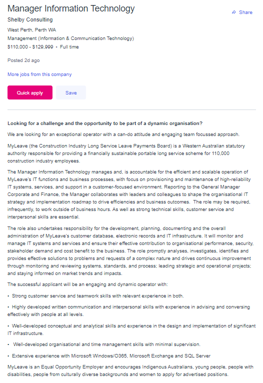
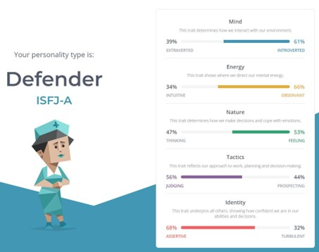
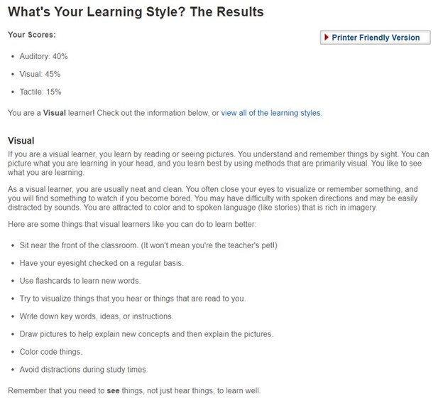
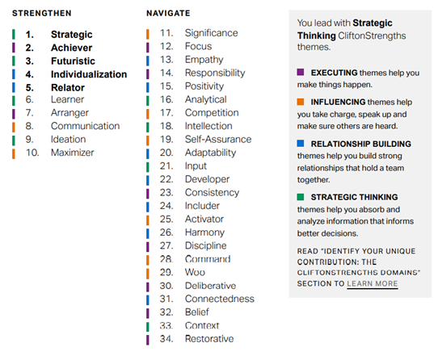

Introduction to Information Technology
Assessment Task 1, Due 20th September 2022.
Brett Russell – S3634270
Brett Russell
S3634270
S3634270@student.rmit.edu.au

My name is Brett Russell, I have recently turned 44 years of age. I am married with two children and have been studying part time towards my Bachelor of Business (Supply Chain & Logistics) for the past 6 years. This Intro to IT unit is actually my last unit before finishing the degree. The journey has been long but extremely rewarding and it has definitely helped me in my career. I have worked for 12 years at a Caterpillar Dealership as a manager of Supply Chain and more recently I moved into a smaller company where I was also the Supply Chain Manager, however my business studies were integral in me being promoted to General Manager 18 months ago. I love to go camping with my family to remote areas mostly within Western Australia which has some beautiful landscapes and countryside. An interesting fact about me is that I was lucky enough to represent Australia in cycling in the late 1990’s riding as the pilot of a tandem bicycle with a blind athlete riding on the back. My partner at the time was completely blind and also had a guide dog – travelling with him meant the guide dog also joined us on the plane and meant we always got issued the very front seats of the plane so the dog could lay at his feet.

Image C/o State Library of New South Wales ID 5164868803 c. 1930s, by Sam Hood
Whilst this unit is not necessarily the start of a career in IT for me, I have always had an interest in IT first taking on computer studies in year 11 & 12 (1994 & 1995), which post high school graduation saw me take on a course at TAFE (1996), which involved basic computer programming at a time when learning DOS commands was still the way to navigate a system.
I am studying through Open Universities Australia, but many of my units have been hosted by RMIT which has been great as I find the studies there to be well presented, the teachers are extremely helpful and make the task of learning so much easier. My expectations of broadening my overall experience have well and truly been met whilst completing my degree, I may not necessarily retain every bit of information I have studied; however, I now know enough to ask the right questions in business and am also able to point people in the right direction to implement a solution.
Whilst I am currently working in a different field, if I were to be changing career paths into IT I would most likely try and aim for a manager’s job of some description.
https://www.seek.com.au/job/58421490?type=standard#sol=9313ae6f12f75e13b43336b4d874bb0c71dd692c

The particular job I have found is titled as “Manager Information Technology” and reports through to the General Manager of a government agency by the name of “MyLeave”. As stated by MyLeave (2022) “Construction workers accrue long service leave with MyLeave based on service to the industry - rather than service to a single employer. This is the portable nature of long service leave with MyLeave.”
The position is responsible for the development, planning, documenting and administration of the customer data base. In addition, the manager must monitor and manage the IT systems and ensure that the systems effectively contribute to organisational performance, security, and cost benefits to the business. Whilst being a manager’s role it looks to still be quite hands-on in the way that the successful applicant must analyse, investigate, identify, and provide solutions to complex problems.
The key requirements to be successful in the role are:
This particular role appeals to me as it is a part of a government agency, is still a management role where you can influence people in a positive manner and feel like you are contributing to something bigger. I also like the fact that it is still partially hands-on which is how I like to operate – my management style is someone that likes to understand the detail of people’s jobs and for the most part be able to do those jobs myself if I needed too. This means that when there are questions I am able to provide detailed information on how to solve the problem not just from a strategic standpoint but also from a technical standpoint.
I currently have 14+ years in management positions both in large and medium sized businesses. All of the companies I have worked for have been heavily focussed on customer service and teamwork, as such I believe those skills are transferable to this role. I have also performed as a Business Analyst for roughly 4 years, which required heavy use of both SQL and other database query programs / methods. I believe for this role however I would need to spend more time really having a deep understanding of Microsoft Exchange and SQL servers, in my analyst role I probably only touched the surface.
To gain the above skills, I would look to take on a specific course to further develop my skills in these areas. There are places in Perth WA that offer courses in SQL Data analysis where they teach you how to create an Azure SQL database, upload, and transfer data, retrieve data using SQL queries etc.
Companies like Nexacu https://nexacu.com.au/sql-training-courses/perth-classes/ host these courses on a weekly basis.
https://www.wa.gov.au/organisation/myleave-construction-long-service-board
For this assignment I completed the following 3 tests:
https://www.16personalities.com/isfj-conclusion
https://www.gallup.com/cliftonstrengths/en/254033/strengthsfinder.aspx

Myers Briggs Results


Education Planner Assessment Results
Gallup Strength Finder Results.
I plan to design a mobile platform to log pre-start vehicle inspections at the workplace. Many companies use a manual form in Microsoft Excel that creates double handling by requiring users on remote mine sites to email through daily / weekly updates on the vehicle and equipment inspections. Currently end user’s records details manually into an email and then an administrator at head office would be required to re-enter the data into Microsoft Excel. The excel sheet keeps a log of the condition and any issues that may be uncovered by completing the inspection.
I propose to create a basic mobile version of the excel sheet that would allow people to remotely enter all inspection results making them available to anyone that needs to see them live as they records are updated.
Our business for example currently has roughly 25 motor vehicles, and 50+ pieces of equipment which we track the condition and servicing requirements for. Records of these services are sometimes requested by our customers on site (where the vehicles and equipment are used) to ensure they are well maintained and safe to be in use. The current solution of emailing records to the head office for someone else to then have to enter them into an excel spreadsheet is both time consuming, adds unnecessary delays and also introduces opportunities for errors, or things being missed. The motivation behind this project idea is to increase efficiency, reduce errors, and provide customers with real time visibility of the condition of vehicles being operated on their sites.
The proposed solution would be that there is a mobile phone app for staff working on remote mine sites that allows them to conduct a daily pre-start vehicle and or equipment inspection. The app should have the capability to send a reminder to the user if they have not completed the inspection by a certain time each day, and also send a reminder to the area supervisors if a certain vehicle has not had its pre-start inspection completed that day.
Once the person on site opens the app they will be required to fill out all essential criteria in the app (date, time, Vehicle, or asset number (selected from a drop-down list or set as a favourite), Key areas inspected (Engine Bay, Wheels, Cabin, Isolator etc) and tick boxes indicating the condition. Ideally we will be able to flag reminders or send alerts based on the inspections i.e., notifying management or administrators of requirements for an upcoming vehicle service, or a potential safety risks that has been discovered by doing a pre-start inspection e.g., Bald Tyres would require the “unroadworthy” tick box to be checked. In this instance it would flag an alert to the supervisor that a certain vehicle has been deemed unroadworthy and show who the user was that completed the assessment and at what mine site. This would then allow the regional supervisor to make contact with the user who completed the inspection and work through the appropriate solution. Any check box ticked “unroadworthy” should then display a message stating “Unless an emergency, this vehicle or equipment should not be operated – please contact your site supervisor for instructions”
A potential challenge could be lack of internet access on remote mine sites, this can be a common issue. A potential solution for this would be a way for the user to still complete the inspection, and the app stores the information until such time that the internet access / mobile data is restored at which point the inspection results would automatically upload to the cloud and immediately be available for viewing by supervisors or administrators. This gap would need to be investigated should the solution be approved for design.
For this project to be successful we would require the appropriate knowledge in utilising Microsoft Forms to build the Power App and the app would require the appropriate technology to be able to sync to the cloud, send notifications and alerts, and store inspection results until a time when internet coverage is once again available (the inspection should then automatically sync).In addition to the technology being available within the app, it would also require either mobile smart phones or company provided tablets to complete the inspections on.
Alternate technology that could be used is to create a list in SharePoint (Automatically secured using current technology and licensing). The list can be used on mobile devices using SharePoint or Microsoft Lists. Using pre-defined triggers on the list settings to action automated emails based on specific criteria, like if a particular box is ticked it will send an alert/email to a specific person for action would provide an ideal solution. Using SharePoint means the listed items can be customised, pictures can be taken, pre-defined options can be setup.
Reporting on the SharePoint list using PowerBI is simplified as it is partly built in.
Flows such as reminders can be setup based on date fields or other criteria. Using SharePoint will also mitigate the need for a database connector. The flow can also setup calendar appointments for services and based on the input data i.e., change the status of an item to “Unroadworthy” etc.
For this project to proceed to development stage, it would require the appropriate skills in software and mobile application development. It is likely that the app would be developed within the Microsoft Power App suite to utilise some existing technology that is available. As stated by Microsoft (2022) “Increase agility across your organization by rapidly building low-code apps that modernize processes and solve tough challenges.” We would need to get a greater understanding about data connectors and how they work and communicate with our SQL data base. By understanding this we would be better equipped to be able to run data base reports on the number of inspections completed, and by who, or run reports on which vehicles or equipment is currently deemed “unroadworthy” and for what reasons. PowerApps can be used as the front end for the App, with the data being in SharePoint. Using these technologies also places the user in the Microsoft Teams environment for greater communication and availability of information. Again, utilising the same license, they are using with Office. There are a lot of resources available online to assist with the required skills, Microsoft (2022) documents a large range of JSON examples including instructions on triggering a flow using the “triggerflow” verb to commence a custom flow.
Should the project idea be successful and implemented throughout our (or other) businesses, it would mean that we would be able to have a live snapshot available at the press of a finger to see the current status of all our vehicles and equipment, with specific detail on the overall condition of the vehicle and anything that is either requiring further inspection or potentially already deemed by the user to be unroadworthy. Having this live data available to management not only ensures that our vehicle servicing is kept up to date, but it also allows them to immediately be notified of anything that could end up being a safety risk, and therefore providing the ability for management to intervene and immediately stop a vehicle being driven or a piece of equipment being operated. Safety is our number one priority, and we want all people to return home in the same condition that they came to work each day.
Gallup, 2022. “CliftonStrengths for Teams and Managers”, n.d., viewed 17 September 2022.
<https://www.gallup.com/cliftonstrengths/en/253832/cliftonstrengths-for-teams.aspx>
WA.gov.au, 2022. “MyLeave – Construction Long Service Board”, 26 August 2022, viewed 12 September 2022.
<https://www.wa.gov.au/organisation/myleave-construction-long-service-board>
Microsoft, 2022. “Site template JSON schema”, 8th September 2022, viewed 12 September 2022.
<https://learn.microsoft.com/en-us/sharepoint/dev/declarative-customization/site-design-json-schema>
Morris, J, 2021. “Psychometric Tests For Recruitment: The Pros & Cons”, 14 April 2021, viewed 17 September 2022.
<https://www.picked.ai/magazine/psychometric-tests-for-recruitment-the-pros-cons/>
flickr, 2022. "Man and woman on a Malvern Star abreast tandem bicycle, c. 1930s, by Sam Hood",n.d, viewed 19 September 2022.